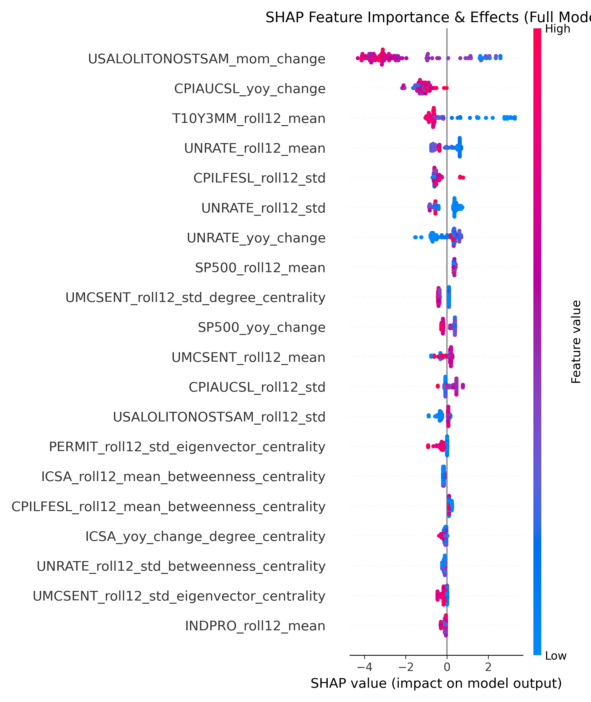
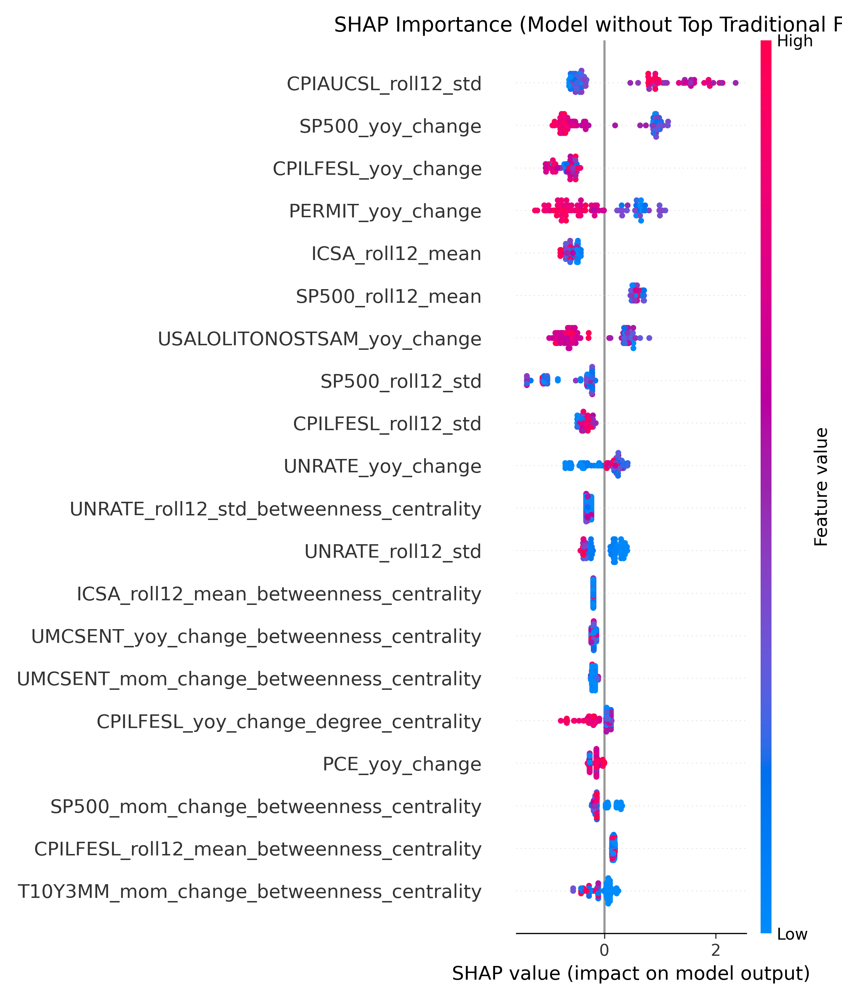

An interactive report on using leading indicators and network analysis to forecast economic downturns.
A Project by Gurpreet Singh
View Source Code on GitHub
This project aims to predict U.S. economic recessions by leveraging a combination of traditional macroeconomic indicators and a novel network analysis approach. The core idea is to model the economy as a complex network where indicators are nodes and their correlations are edges. By analyzing the structural properties of this network over time, we can extract new features that may capture systemic risk and financial contagion.
The analysis compares a baseline model, trained only on standard time-series features, with an enhanced model augmented by these network centrality metrics. This interactive report walks through the methodology, results, and key findings of the project.
The model is built upon 12 leading economic indicators sourced from FRED and Yahoo Finance, chosen for their relevance in capturing different facets of the economy.
From the raw data, two distinct sets of features were engineered to feed the models.
Standard metrics that capture momentum and trends, such as Year-over-Year % Change and 12-Month Rolling Averages.
Metrics derived from the correlation network, such as Degree, Betweenness, and Eigenvector Centrality, to quantify an indicator's systemic importance.
Comparing the Baseline Logistic Regression model against the Enhanced XGBoost model (with network features).
A SHAP analysis on the best model reveals which features have the biggest impact. High feature values pushing the prediction higher are shown in red, and those pushing it lower are in blue.
Finding: The model's predictions are dominated by traditional indicators like the OECD Leading Indicator, Yield Curve, and Inflation. Network features are not among the top predictors.
What happens if we remove the most powerful traditional features and retrain the model? Will the network features become more important?
Finding: Even when deprived of its strongest predictors, the model still relies more on other traditional metrics (like S&P 500 volatility) than the network features.
The structure of the economy's correlation network changes over time. Below are snapshots from different critical periods. Green edges represent positive correlations, and red edges represent negative correlations.
These plots show how the systemic importance of key indicators (their centrality) changes over time, with actual recession periods shaded in gray for context.
Yield Curve Betweenness
S&P 500 Volatility Degree
Unemployment Eigenvector
This project successfully demonstrated that augmenting a dataset with network centrality features can improve the performance of a non-linear model like XGBoost for recession prediction, increasing the validation ROC AUC to 0.95.
However, a deep interpretation using SHAP reveals a more nuanced story. The model's predictive power is still dominated by traditional macroeconomic indicators. The network features, while contributing to a marginal performance lift, appear to capture information that is largely redundant or less powerful than that contained in standard time-series transformations of the base indicators.
The final conclusion is that while network analysis provides a measurable improvement, the primary drivers for this specific recession prediction task remain the powerful, well-established macroeconomic variables.